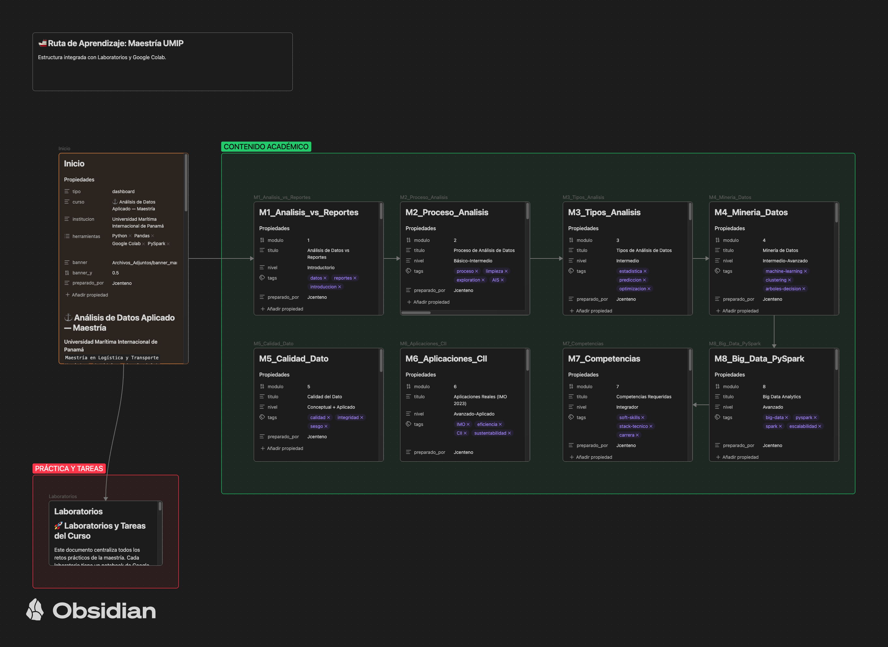

Recursos académicos, laboratorios y cuadernos de análisis de datos para el sector portuario y marítimo.
Diferenciación conceptual y fundamentos del análisis de datos.
Metodología y ciclo de vida del dato marítimo.
Descriptivo, diagnóstico, predictivo y prescriptivo.
Extracción de patrones y conocimiento en flotas.
Gobernanza y auditoría de datos AIS y operativos.
Eficiencia energética y cumplimiento normativo marítimo.
Habilidades requeridas para el analista de datos moderno.
Procesamiento distribuido de grandes volúmenes de datos AIS.
Exploración inicial de datos portuarios en Python.
Preprocesamiento y limpieza de trayectorias marítimas.
Estudio de caso específico sobre datos de Corozal.
Clustering y patrones de movimiento de barcos.
Auditoría y validación de datasets marítimos.
Cálculo y monitoreo de indicadores de eficiencia.
Integración de todas las fases del proceso analítico.
Escalamiento de análisis con Apache Spark.
Instrucciones para configurar el entorno de análisis.
Librerías esenciales: Pandas, GeoPandas y Folium.
Diccionario de conceptos de datos y logística.
Detalles curriculares y cronograma de la maestría.
